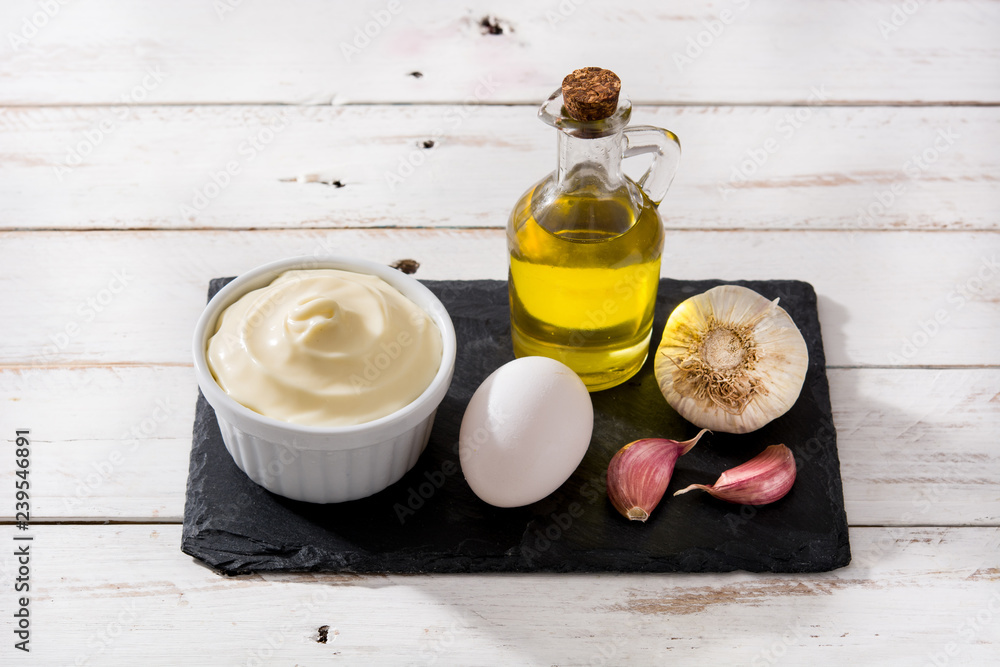
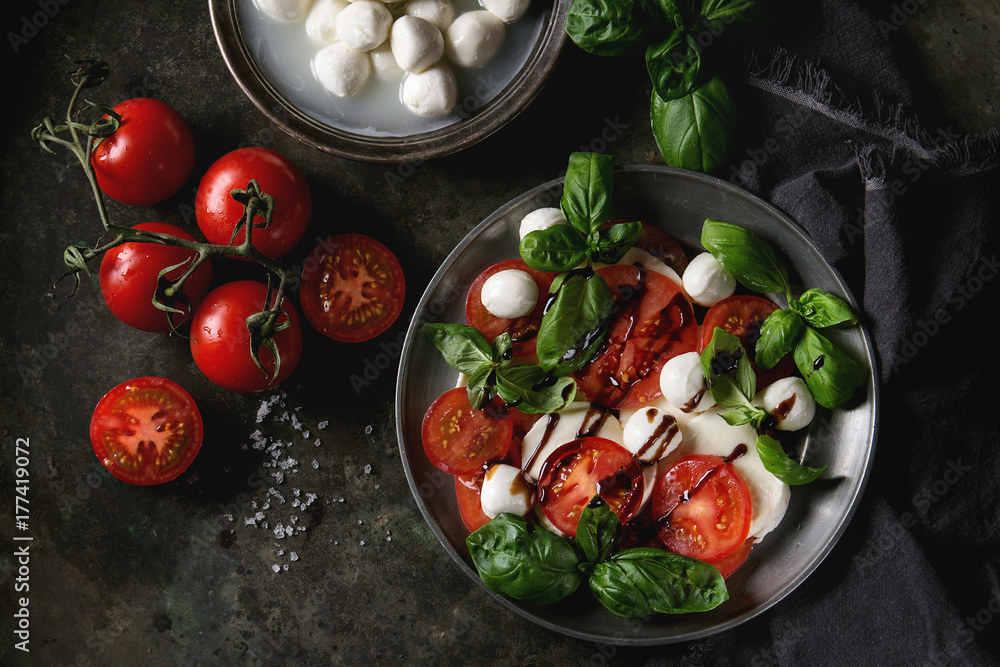
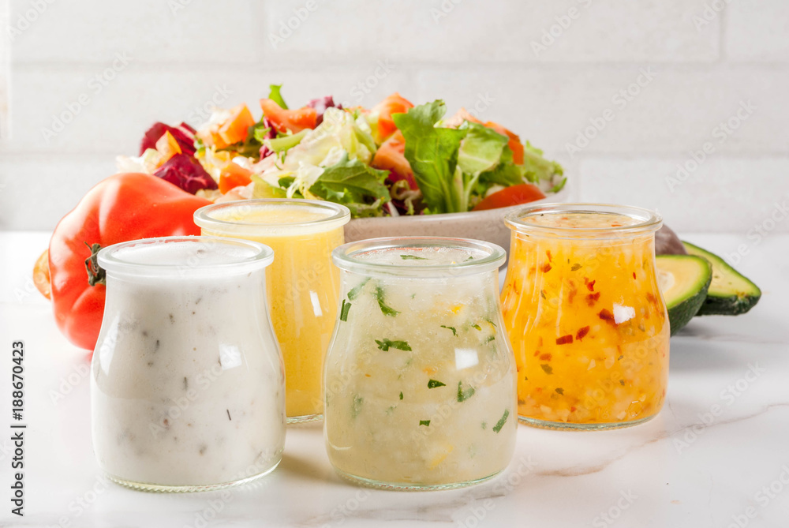

Andalucia has certainly been a land of olive trees for thousands of years. The olive tree dominates the landscape of southern Spain, with more than a million and a half hectares dedicated to its growth and gastronomy, as it is the basis of the Mediterranean diet.
Here the best extra virgin olive oils of the world are manufactured, and it is not the Andalucians who say this. For another year they have been in the 2021 ranking of the World's Best Olive Oils World's Best Olive Oils of the International Oleic Council. Out of the first ten best oils in the ranking, nine are Andalucians. This is because Andalucia is the largest oil producer worldwide, with more than 800 tons.
The best olive oil for salads is the extra virgin olive oil. It is the olive oil with most flavored and fruity of all of them.
But of course, there are many varieties of extra virgin olive oils, each of which have their own characteristics. So, we propose one or several varieties of extra virgin oil for each type of salad.
For fresh salads, with many greens and vegetables, like the typical summer salad with lettuce, tomato, onion, cucumber, carrots, etc… we recommend an extra virgin olive oil like Picual or Manzanillo, whose fresh and herbaceous notes fit perfectly and enhances the flavors of these ingredients, improving any that may be lacking in taste, as sadly happens frequently. (There are no good tomatoes like in past time)
The nutritional values per 14g of one tablespoon of olive oil are:
| Picual Olives | Manzanillo Olives |
|---|---|
| Chemical composition | |
| 79-82.5% Acid Oleico | 70-80% Acid Oleico. Very high |
| 9.5-11% Acid Palmitic | 9-14% Acid Palmitic |
| 3-4% Acid Linoleic | 6-10% Acid Linoleic |
| 2.7-3.5% Acid Stearic | 2-3% Acid Stearic |
| Polyphenols: 300-500 medium-high quantity | 0.7% Acid Linolenic (Omega 3) |
| Stability: very high, 45 hours at 120ºC | Polyphenols: 200, low amount |
| Stability: high- very high, 35 hours at 120ºC | |
| Antioxidants (Polyphenols in ppm): High-very high, 400 |
Prepare Aioli at home with this quick and easy recipe. A typical sauce of Spanish gastronomy ideal to accompany dishes of paella, fish, meats or chips.
Its name all-i-oli means garlic and oil , the two main ingredients in this sauce. It can serve as a complement to numerous dishes and it is very common to find it together with fish, meat, pasta, rice and, above all, potatoes , whether fried or roasted.

Place the minced garlic clove , the egg, a pinch of salt, a dash of oil and a dash of vinegar in
a blender glass.
Insert the mixer all the way in and start beating without moving the mixer.
When it starts to emulsify, move the mixer arm gently up and down until it is very
homogeneous.
So that the aioli is not cut , you can add some egg yolks at the beginning of the preparation.
Summer is nearly here! We love this season because it's the perfect time to eat all the great organic vegetables from our neighboring farms. One way to enjoy the delicious abundance of fresh fruits and vegetables is in salads. However, at OLEA we refuse to eat boring, tasteless salads. Therefore, we’re going to share with you the reasons to make your own, and the basics for creating custom salad dressings.
Sure, the grocery store is full of salad dressings, but often they’re full of preservatives that impact the taste and nutritional value of the dressing. Furthermore, they can sit on the shelf for a long time before they're bought, which can further reduce the nutritional value of the product.
To get started designing your own custom dressing, you need as little as two ingredients: an oil and an acid. From there you can get as creative as you like.
Olive oil contains polyphenols which, according to research, can play a role in slowing cardiovascular and neurodegenerative diseases. Olive oil also has antioxidant properties. Research into vinegar shows it might be slightly helpful with controlling the body's glycemic response. Together there's no doubt, they're delicious!
We use this basic combination here in our using mini mozzarella balls and cherry tomatoes. We serve this with our basil infused olive oil and aged balsamic vinegar. It's amazing!
There are four main ingredient types to consider when making a salad dressing: fat, acid, sweetener, and spice. For fat we recommend olive oil because it carries flavor so well and it has so many healthy properties, though you can definitely try different oils or healthy fats like avocado.
The two most common acids in a salad dressing are vinegars and fruit juices. You’ll want to pick the flavors that you think will bring the most out of your salad components. This might require some delicious experimentation!
Sugar is a common sweetener used in store-bought salad dressings. However, we recommend trying a sweet fruit juice like orange or a natural sweetener like agave or honey. In fact, if you want an emulsifier in your dressing, honey is an excellent choice. A nice benefit of making your own dressing is that you can control how much added sugar is going into your food.
Start with salt. A little can go a long way and bring out the natural sweetness in your fruits and vegetables. Experiment with herbs like rosemary, mint, basil, or tarragon. If you’re wanting some extra zip or an emulsifier, try Dijon mustard.
The trick to making a brilliant salad dressing is to explore flavors and flavor combinations you enjoy. Take some time this summer and have fun experimenting with the abundance of healthy foods and flavors!
Jennifer Vespes is Production Manager at Two Trees. She has the critical role of ensuring our production facilities are safe and efficient, and that our products consistently maintain their exceptional quality. When not overseeing our olive oil production, she loves to create and invent in the kitchen, often sharing her recipes on our blog.
© Olea Olive Oils Inc. 2023 ®